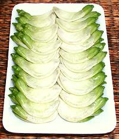
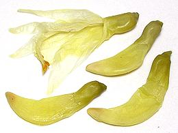

Native to Southeast Asia and tropical India, flowers of this plant are often used as a vegetable throughout Southeast Asia. In Thailand flowers are cooked in curries and served raw with a fish sauce dip. In India and Sri Lanka young pods and leaves are also used. These trees require hot humid growing conditions and are extremely sensitive to frost, so are not grown in California. The photo specimens were about 2-1/4 inches long on average.
A small yellow species, S. bispinosa, is also used in Vietnam and Thailand but is less popular. That species is grown widely in India for non-culinary purposes. A red variety of the larger S. grandiflorra also exists.
More on Varieties of Bean.
 In Southeast Asia these buds are used raw, steamed and in curries. The taste of raw ones is rather bitter, but this is much lightened by cooking.
 In the photo to the left are buds that were packed in a light brine. From Thailand, the jar was labeled "Pickled Dok Kae in Brine". Ingred: Dok-Kae, water, salt, citric acid, sodium benzoate, sodium metabisulfite. The taste was lightly floral, with just a touch of bitterness. Length of the brined buds varied from 1-1/2 inches to 3-1/2 inches, with some of the more mature buds starting to open.
These could be served as an appetizer pickle, with or without a dip.
They were purchased from an large Asian market in Los Angeles.